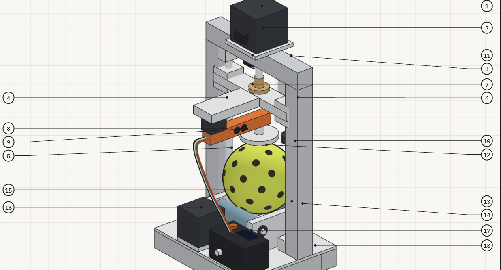

Gate Review 2 · Concept & Prototyping
Proposed Concept Description
Keep the playable balls. Retire the non-playable ones. Frequent, competitive players suffer from performance loss due to degraded balls. They can't tell when a ball is not fit for play, and no tester checks balls in play. CuPickle is an enclosed rolling compression system that compresses a ball at multiple positions and grades it playable or non-playable.


Figure 1. CuPickle: concept render with the door closed and open (team, AI-assisted), and the full-scale alpha prototype of its press and roller cradle.
Updated need and design problem
Balls soften, reducing performance, and players can't tell.
Target customer
The individual frequent, competitive players who bring their own balls to the courts.
Priority need and use context
Player performance should not be impacted by a degraded ball. Every ball in play should perform like a good ball. Today players judge by look, bounce or compression in about 3 s [7], and 52.8% rate their confidence 3 or lower of 7 [1].
Principal benefit
Consistent performance, fair games: retire a ball on evidence before it costs a point, and keep the balls that still play well.
Revised since Gate Review 1
Customer: players and facilities → individual competitive player. Use: test system at facilities → device the player carries. Scope: balls only; paddles out of scope.
Why it is still worth pursuing
The goal of this project is to design a pickleball condition tester for frequent, competitive players that tells them objectively whether a ball still plays like a good ball before or between games so that they do not use a ball that reduces their performance.
Scope and constraints
- ≤ 30 s to test per ball
- No damage to the ball
- Portable: ≤ 2.5 L and ≤ 2 kg
- Production: < $400 prototype, < 8 weeks to make, buildable in class
- Retail target ≤ $100 [3]
What guided the concept
| Customer need (weight) | Specification | Target |
|---|---|---|
| Identifies low-performance balls (15%) | Agreement with the USA Pickleball drop test; depth resolution | ≥ 90%; 0.025 mm |
| Doesn't damage the ball (13%) | Rebound change after 50 tests | ≤ 0.5 in. |
| Gives repeatable results (13%) | Change across repeat tests and operators | < 10% |
| Increases confidence (10%) | Gain on a 7-point confidence scale | ≥ 2 points |
| Affordable (10%) · Tests quickly (10%) | Retail price · time per ball | ≤ $100 · ≤ 30 s |
| Fits routine (7%) · Portable (7%) | User actions · packed volume and weight | ≤ 2 · ≤ 2.5 L, ≤ 2 kg |
| Producer constraints | Manufacturing cost · time to manufacture | < $400 · < 8 weeks |
Table 1. The needs, specifications and constraints that guided concept generation. Weights combine the four stakeholders' rankings in the GR2 House of Quality [3].
How CuPickle works
The player opens the door with the finger recess, sets the ball on a two-roller cradle, closes the door and presses the start button on top: two actions. A stepper-driven lead screw lowers a plate onto the ball; the load cell detects contact, then the plate compresses the ball a fixed distance while force is recorded on the way down and on the way back up. That gives two damage signals, stiffness (force ÷ deflection) and hysteresis (the loop between loading and unloading). The plate lifts, the rollers turn the ball, and the compression repeats at 4–6 positions. A position that reads far from the others flags a soft spot, or a ball resting on a hole or seam. The controller compares the results with a new ball of the same model and shows Playable or Non-playable on the readout, while the player watches the test through the door's window.
Fixed-displacement compression is the principle behind the compression test in the USA Pickleball Equipment Standards Manual, which requires new balls to average below 43 lbf under ASTM F1888 [4]. CuPickle applies it to balls already in play.
Evidence the concept works
Pickleball Science compressed Franklin X-40 balls with a plate and force gauge after each hour of competitive play [2]. This validates our device methodology:
- Linear response. Force and displacement are linear up to 30 lb, so stiffness (k = F/δ) from a fixed compression is a valid measure.
- A large signal. Stiffness fell from 93.5 to 84.0 to 75.2 lb/in over two hours, about 10% per hour of play.
- Soft spots. After three hours stiffness changed with ball orientation, which is why CuPickle compresses at 4–6 positions instead of one.

Subsystems and how they interact
Housing
Dark upper shell for the drive, white lower shell for the cradle, windowed door and finger-pull recess.
Ball handling
Two silicone-sleeved rollers that cradle the ball and turn it between compressions.
Compression
Stepper and lead screw drive the plate; a collar sets a 5 mm hard stop.
Force sensing
A load cell in the full force path reads force through loading and unloading.
Control
Computes stiffness, hysteresis and the outlier check, subtracts frame flex from a steel-ball calibration, grades the ball.
User interface
One start button and a readout on the top face; the window shows the test.
Parts list

| # | Part | # | Part |
|---|---|---|---|
| 1 | Compression stepper: NEMA 17, integrated T8×2 lead screw | 10 | Hard-stop collar: limits compression to 5 mm |
| 2 | Motor plate: bolts to crossbar | 11 | Top endstop: microswitch, homing |
| 3 | Top crossbar: 2020 extrusion, 150 mm | 12 | Pickleball: Ø74, 26 g, 40 holes Ø8 |
| 4 | Uprights ×2: 2020 extrusion, ~200 mm | 13 | Rollers ×2: Ø20 × 60, silicone 30A, 54 c–c |
| 5 | Guide rods ×2: Ø8, SK8 clamps top & bottom | 14 | Side blocks ×2: printed / Al, flanged bearings, Ø6 shafts |
| 6 | Carriage: LM8UU ×2, rear tongue for load cell | 15 | GT2 drive: 3 pulleys, one belt, rollers co-rotate |
| 7 | Lead-screw nut: T8 brass, flanged | 16 | Roller stepper: NEMA 14 · 222° = 60° ball roll |
| 8 | Load cell: 20 kg straight bar, cantilever, full force path | 17 | Electronics enclosure: OLED + start button on top |
| 9 | Top plate: Al disc Ø40 × 5, on standoff | 18 | Base: 2020 frame 150 × 120 + 3 mm plate |
Table 2. CuPickle parts list (callouts 1–18 in Figure 2). Also on Top Concepts: Concept A.
The controller commands the compression drive, the drive deforms the ball, the load cell returns the force, and the controller decides whether to compress again, roll the ball, or report a grade. The architecture drawing and operating sequence are on Proposed Concept & Alpha Prototype.
Benefits and differentiation
CuPickle replaces a compression or bounce by feel with a measured answer. It detects softening that players cannot see or feel, and because it reads two signals at several positions it finds local soft spots that a single compression or bounce misses; Pickleball Science stopped its play test after three hours precisely because stiffness began to vary with ball orientation [2]. The player can watch the test happen, which builds trust, and it is the first tester aimed at balls in play rather than at paddles or factory quality control.
Why this concept was selected
Five meaningfully different concepts were compared against the test-gun datum with a Pugh matrix and a weighted matrix built from the GR2 QFD. Concept A, the Rolling Compression Station, was refined with two features from the CubeClamp (E), a hysteresis signal and steel-ball calibration, and the refined A′ scored highest at 3.25, ahead of the CubeClamp at 3.19 [5]. Because that gap is smaller than one rating step, the team decided on buildability: the CubeClamp's ball does not fit through its 40 mm opening, and it needs two synchronized motors and a machined flexure, while A′ uses off-the-shelf parts and two user actions. The full argument is on Downselection.
Advantages, limitations, risks and open questions
Advantages
- Objective and repeatable: the motor, not the user, sets the compression.
- Two damage signals at 4–6 positions per ball.
- Non-destructive: a software force limit and a 5 mm hard stop cap the deformation; the door keeps fingers out of the compression.
- Off-the-shelf parts, about $130 against the $400 prototype budget.
Limitations and risks
- The alpha prototype showed that two plain rollers let the ball drift on the other axis, so the cradle needs multi-axial contact to control which spots are pressed.
- At about 8 in. tall it is slightly too big for a bag; it exceeds the 2.5 L / 2 kg targets.
- Two motors make the $33 unit-cost target hard.
- One rotation axis tests about 30% of the surface.
Open questions. What Playable threshold fits each common ball model, and how should temperature be handled, given that stiffness changes strongly with temperature [6]?
Gate Review 2 recommendation
Players need to trust that their ball does not impact their performance due to soft spot degradation. CuPickle is the only concept that reads damage signals at several positions. It scored highest (3.25), and the alpha prototype showed the component layout feasible but overall size for portability should be reconsidered.
First steps: a motorized prototype with a multi-axial cradle; drop tests of 20 new and used balls to confirm at least 90% agreement with the bounce test; 50 tests on control balls to confirm at most 0.5 in. of rebound change; and a smaller frame. If agreement falls short, the CubeClamp's curve-based approach is the fallback. Details: Proposed Concept & Alpha Prototype.
The detailed record
Each page below documents one step from product requirements to the gate recommendation.
Conceptualization Methods
Seven methods used to explore the design space, and what each one produced.
SECTION 02Functional Decomposition
What the tester must do, with its material, energy and signal flows.
SECTION 03Concept Tree
Every way to sense ball damage, grouped by physical principle, with gaps filled.
SECTION 04Top Concepts
Five different concepts, one per team member, each with a drawing.
SECTION 05Downselection
Feasibility screen, Pugh matrix and QFD-weighted scoring, with sensitivity checks.
SECTION 06Proposed Concept & Alpha Prototype
Architecture, operating sequence, the alpha prototype and next steps.
SECTION 07Social Impact Statement
Who the product affects, how, and the design decisions made because of it.
References
- [1] Team 1, “Activity 10a: Consumer Survey,” ME 455, 2026 (n=36 responses). See Market Research.
- [2] Pickleball Science, “How Many Games Will a Pickleball Last?” Mar. 15, 2023. pickleballscience.org
- [3] Team 1, “ME455 Pickle QFD” workbook, GR2 QFD tab, 2026. See House of Quality.
- [4] USA Pickleball, Equipment Standards Manual, Rev. 3.0, Jan. 2025, rule 2.D.6. usapickleball.org
- [5] Team 1, “CuPickle Downselection (condensed),” ME 455, Oct. 26, 2026. On this site: Downselection.
- [6] Pickleball Science, “How Does Temperature Affect a Pickleball?” 2024. pickleballscience.org
- [7] Team 1, “Activity 10b: Consumer Interviews,” ME 455, 2026 (P1–P4). See Market Research.